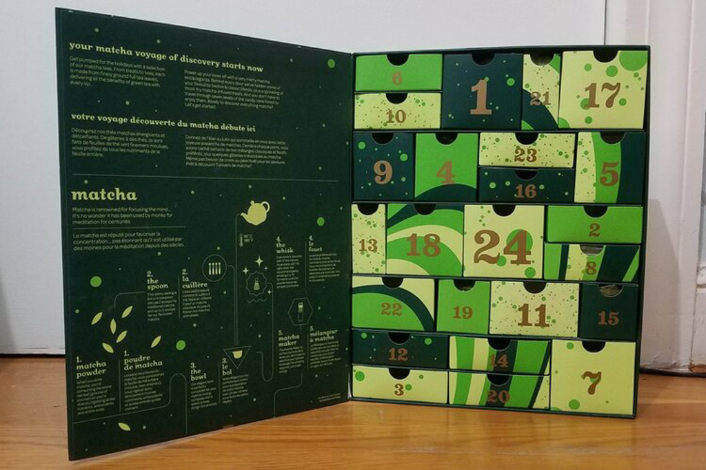

David’s Tea- 24 Days of Matcha
Dec 31 - Written by Bonnie and Emily
The holiday season comes with many joys, one of which are advent calendars! Having seen these pop up every year, we decided this year was the year we’d finally try our first advent calendars.
Now we both love tea so it was a no brainer that we’d look for a tea related advent calendar; however, as we were both a little late to the game, we couldn’t get our hands on the traditional David’s Tea advent calendar that we have seen raving reviews for. So, we settled on the next best thing--a matcha advent calendar because it was more unique and we both also love matcha!
Going into this, we were both skeptical about some of the flavors as we couldn’t possibly see how pumpkin pie matcha or bubble gum matcha could be any good. But, like any new thing, there will always be some we like and some we don’t.
As neither one of us had the right equipment to prepare matcha nor did we know the matcha to water ratio, we just went day by day and learned what worked best as we went. Our methods weren’t anywhere close to being traditional or possibly accurate, but our strategy made it so that we could relive the 24 days of matcha all over again once we finished since we only used half the packet of matcha powder each time. So, it was like a 2 for 1 deal!
Now onto what you’re all here for, our review of all the flavors.
Pumpkin Pie Matcha
Bonnie
Since I’ve never been a huge fan of pumpkin, I can’t say that this was one of my favorite flavors, Although you get a nice pumpkin spice flavor to your tea, its still a little hard to taste the matcha in there. I do think that this flavor was still better than many of the others that are within the calendar and would recommend this.
Emily
This one wasn’t bad but I didn't quite get the pumpkin pie taste. I could taste matcha with a hint of something else but the hint of something else wasn’t the pumpkin pie flavor I was familiar with. I’d recommend this only because it was decent and there technically was both flavors present even if I wasn’t quite a fan of it.
Matcha Matsu
Bonnie
This was absolutely delicious! Depending on your taste for rich and roasted tea flavors this could be the perfect matcha for you. It was a stronger matcha taste that you definitely can’t go wrong with! But make sure you have the proper tools to fully whisk and enjoy this matcha specifically!
Emily
You can’t go wrong with regular non flavored matcha. As someone who has only ever had non flavored matcha (until now), this one was really good, it was stronger than the matchas I’ve had before but it definitely needed to be mixed properly to be fully enjoyed.
Berries & Creme Matcha
Bonnie
This was definitely a flavor that requires an acquired taste. Especially since I am not a huge fan of overly sweet flavors, this was not one of my favorites despite how much I love berries! There was a lack of matcha flavor and was a strong artificial berry smell that I would avoid if I could!
Emily
Now this one smelled really sweet off the bat and was very artificial smelling so I didn’t have high hopes going into this. From there, it was just as expected, overly sweet and artificial with no hint of matcha whatsoever. Therefore, this is the one you should definitely avoid if you’re looking for a fruity matcha.
Peach Matcha
Bonnie
Peach is a yummy flavor that I also always love to pick, this was a fruity flavor but was still better than the berries and creme matcha flavor! There was a slight hint of peach flavor and still maintained that nice matcha taste that gave it a better balance of fruity and tea flavors!
Emily
Peach flavored things tend to be quite good so there was hope for this one. It was much better than the previous berry one and you could get a hint of both the peach and matcha flavors. Although it isn’t quite my favorite one so far, it’s definitely one you should try for yourself because it may be one you’d like!
White Chocolate Star w/ Salted Caramel Matcha
Bonnie
This white chocolate and caramel was a great combination. Although the white chocolate taste was overpowering and led to a lack of matcha flavor, the combination of white chocolate and caramel was still delicious and you could even take a little bit of sea salt in there! Although this was pretty tasty, I did give it a lower rating because of the lack of matcha flavor in there.
Emily
This one smelled of white chocolate and caramel which was a good sign; however, after taking a small bite, you get a little disappointed that there is no matcha flavor present. Granted, white chocolate is very overpowering so it’s hard to get a good balance but I was hoping for more matcha flavor than I got. All I could really taste was the salted caramel which was why this got such a high rating but since this is also supposed to be matcha flavored, I can’t recommend this as something you should get.
Blueberry Matcha
Bonnie
Of course as you may know from my Berries and Creme review that berry flavors were not some of my favorites and so I did tend to dislike this blueberry flavor as well. Again, there was a strong artificial flavoring and lack of matcha flavor that did not make for a tasty drink.
Emily
With the berries and creme one being the worst one yet, there wasn’t much hope for this one. Even just smelling this one, I could tell it wasn’t as strong as the berries and creme but it was still a similar scent. Tastewise, it was better, less strong of a berry flavor than the berries and creme but still not good. I wouldn’t recommend this as it’s not worth it for some artificially berry flavored water.
Honey w/ Matcha
Bonnie
This was a super delightful treat that was super yummy on its own, you can still taste the matcha flavor even through the honey’s sweetness. As the instructions say, swirl it in some of your tea for even more flavor and it’ll definitely be delicious!
Emily
You can’t go wrong with matcha and honey. This is tasty on its own but I imagine it’ll be even better swirled into some tea. I haven’t tried that yet but if you’re ever looking for something sweet, grab yourself some matcha honey. You’ll get a good balance of both matcha and honey every time!
Maple Matcha
Bonnie
Maple matcha definitely had the strong maple syrup taste that a lot of people enjoy, as do I. I gave this flavor a higher rating because even though the matcha taste may be less distinctive, the maple’s flavor makes up for it as a light sweetener for your tea.
Emily
Maple matcha reminded me of maple syrup as maple syrup is practically the only type of maple I’m most familiar with. What was nice abou this matcha was that you could taste matcha and the maple acted as a sweetener for the tea but you could still get a hint of the maple flavor so it wasn’t all lost. As far as all the matchas up until day 8, this was my favorite.
Vanilla Matcha
Bonnie
Although vanilla was also another sweetener similar to the maple flavor, I felt like this one was a little overly sweet compared to the maple one which led to less matcha taste in my tea. Although, I will say that this flavor matcha was a pretty decent flavor that it wouldn’t hurt to try!
Emily
Vanilla matcha gave me similar vibes to the maple, the vanilla flavor provided the sweetness and not much more. What was funny about this one was that the smell reminded me of chocolate and matcha whereas the taste was only of matcha. I’m not sure where the chocolate smell came from but it smelled more like that than it did of vanilla. Overall, it was still a decent cup of matcha so it’s worth a try if you’re interested.
Raspberry Matcha
Bonnie
On our third berry flavor, this was definitely not one of my favorites either. Although I did give this flavor a higher rating than the blueberry and berries and creme because the hint of raspberry was much more subtle so that you could really taste some of the matcha a bit more. Although this was better compared to the other berry flavors, this was still one of my least favorite flavors in the box.
Emily
The berry ones aren’t great but I’d have to say this was the best beret flavor so far. It wasn’t as sweet but still pretty artificial tasting. I can’t remember too much about how this one tastes, which just comes to show that it wasn’t anything special. I like raspberry flavored things but this isn’t one of them.
White Chocolate Star w/ Blueberry Matcha
Bonnie
As the other white chocolate star that we had earlier, the white chocolate flavor was overpowering but you could still taste a little bit of a fruity flavor in there that provided some blueberry taste in the chocolate. However, because the berry flavor was another layer of sweetness, the treat was a lot of sweet on top of sweets.
Emily
Similar to the other white chocolate star, the white chocolate is far too overpowering so it's the primary taste you get. However, unlike the salted caramel, I couldn’t quite get a blueberry taste nor could I get any matcha so it was like eating any ordinary bar of white chocolate.
Gingerbread Matcha
Bonnie
Gingerbread matcha was definitely a pretty tasty flavor but would really require an acquired taste. As someone who really enjoys earthy flavors and spices, this tea was enjoyable as there was a strong ginger and spice taste to the matcha. Despite there being a lack of matcha flavor, the ginger taste makes up for its weaknesses and is definitely worth a try for all the ginger lovers out there!
Emily
I was really curious about this one going in but after smelling it and tasting it, it wasn’t what I had imagined. Gingerbread has many spices in it along with ginger, so I was surprised when I tasted the tea and all I really got was ginger. Since this was still a pretty decent cup of ginger tea, I’d recommend this for those who like ginger tea, I’m not a big fan of ginger tea but it was worth the try.
Salted Caramel Matcha
Bonnie
Salted Caramel was not the most tastiest of tea flavors, although the caramel was similar to the maple flavor in providing a sweetener, the salt was a little too much and ended up overpowering the tea and led to the lack of matcha flavor. Although this would make for a great Starbucks drink, the balance of flavors were a little lacking to make for a great cup of tea.
Emily
The first time I had this, it wasn’t bad, it was actually quite decent but I’ve learned that the flavors come out more when the tea has cooled down and isn’t piping hot. So, when I tried it again cold, it wasn’t good at all. The caramel flavor is the only flavor you can taste and it's not a pleasant caramel flavor. As someone who loves caramel and all the caramel drinks at Starbucks, this isn’t anywhere close to being on the same level. The chocolate version of this flavor was far better than this even if you can’t taste the matcha in either one.
Yuzu Matcha
Bonnie
This was one of the most surprising tea flavors in the box. I gave this a very high rating because of my love for citrus and sour flavors but beware this tea flavor is definitely a sour one! Its perfect because you can also taste a bit of the matcha flavors that lead to a great cup of tea, especially if you enjoy tea that is a little less sweet.
Emily
This one was interesting, it was a bit more sour than all the ones we had so far which was a nice change and also expected considering its citrus. Even though I couldn’t taste much of the matcha, the yuzu made this a nice cup of tea on a cold winter morning. If you’re into something less sweet, definitely give this a try, and if you are not a fan of the sourness, you could try adding a teaspoon of the matcha honey to make it better.
Wild Honey Matcha (Emily’s Top Pick)
Bonnie
This was another great tea flavor packed with floral tastes that create a great hybrid of floral, honey, and matcha flavors. Needless to say that the flavor was also a good compliment to the matcha flavor itself. I could definitely see myself purchasing this from Davids Tea.
Emily
This one was my favorite because you could still taste some of the matcha while also getting an additional flavor in there. The wild honey added the right amount of sweetness as well as a hint of floral to the tea. It just made for a very pleasant flavor combination and it's one of the ones I definitely recommend trying and wouldn’t mind purchasing separately.
Lavender Honey Matcha (Bonnie’s Top Pick)
Bonnie
This is the flavor that I have been raving about ever since I finished the advent calendar box. You can definitely smell the lavender and honey in the tea while still tasting the roasted matcha flavor that again provides the best mix of tea flavor. The floral tea flavors are definitely great compliments to the matcha taste and this flavor in particular is one that I will keep going back for.
Emily
Similar to the wild honey, this one was a good combination of matcha and floral flavors. You could definitely taste the lavender and it got a little too much at times but as someone who likes lavender, I didn’t mind it. This one is good and 16 days in, it appears there's a trend for the floral ones being the best ones. If you’re a fan of lavender, try this one out because you will most definitely enjoy it!
Milk Chocolate Star w/ Peach Matcha
Bonnie
With the track record of some of the other chocolate treats that we had had, I didn’t expect to taste a lot of matcha flavor in this one either. Although you could taste the blueberry flavor int he white chocolate, the milk chocolate in this treat almost entirely overpowered the peach and the matcha flavor that led to quite a disappointing treat although you can never go wrong with chocolate!
Emily
I honestly had higher hopes for this one as it wasn’t white chocolate, but it was just as disappointing. This one was much like the white chocolate with blueberry matcha where you couldn’t taste the flavor or matcha at all and all you got was chocolate. Its decent chocolate but I’d suggest you go out and buy nicer chocolate than this since you can’t taste any of the other flavors.
Mocha Matcha
Bonnie
Again, this sounded like a great Starbucks drink flavor and I was quite excited to try this flavor. The tea was a darker color than a lot of the other flavors we had tried and what ended up being more surprising was that there was more matcha than mocha flavor! The mocha flavor added a little bit of a roasted taste to the tea that ended up tasting actually quite pleasant.
Emily
I wasn’t sure what to expect for this one but as we had already had many chocolates with flavored matchas, I imagined it to be a bit like that but with more matcha. That wasn’t quite the case. I tasted matcha but I couldn’t quite find the mocha which was quite disappointing. Overall, it was decent tasting but since it's not what was advertised, I can’t recommend this as something you should try for yourself.
Cherry Blossom Matcha
Bonnie
Cherry Blossom was another floral flavor that we were excited to try and actually ended up being a nice surprising taste. There was a slight tangy flavor in there that I think comes with most cherry blossom flavors but we were still able to get that taste of matcha that led to a decently yummy tea flavor.
Emily
Cherry blossom was a flavor I was interested in because I have never had anything cherry blossom flavored before so I wasn’t sure what to expect. I can say that this one was pretty good but I wasn’t fully sure what I was tasting. It was good but the cherry blossom was definitely on the more subtle side and with no prior knowledge to know it should taste, I was satisfied with it. If you’ve had cherry blossom flavored drinks or snacks before, let us know what you think of this one.
Mango Matcha
Bonnie
Mango is one of my favorite fruits and so I was quite excited to give this one a try, although the mango flavor in the tea was definitely artificial, this was to be expected. Despite having an artificial taste, this was still a pretty good fruit flavor compared to others.
Emily
I like mango but this one was not my favorite because it was artificial mango flavoring with a hint of matcha powder. It wasn’t too sweet but I just couldn’t get over the artificialness to really enjoy this one. If artificial mango flavoring is your jam, go for it but its not for me.
Strawberry Matcha
Bonnie
Right out of the bag, the strawberry matcha powder actually smelled quite yummy until I gave it a taste. With its track record, the berry flavors in the calendar are definitely a no go. Again there was a lot of artificial berry flavoring that was not my cup of tea.
Emily
I had high hopes for this as strawberry and matcha are a classic flavor pairing but this was very disappointingly artificial like all the others. I guess it could have been expected after trying 20 other matcha flavored treats and drinks but this one had the potential to be good.
Matcha Alligator Gummies
Bonnie
These gummies were a treat that I was looking forward to. A disclaimer first is exactly how sticky these candies are!! Although the gummies taste a little sweet and reminded us of peach ring candies, there was really no matcha flavor in the candy itself that led to bit of a dissapointment.
Emily
I was excited for these gummies but after tasting it, I was sad I couldn’t get much matcha. This candy reminded me of some other sweet I’ve had before but I couldn’t quite figure it out but after some digging, we found out that these are actually peach and matcha gummies, not just matcha. So with that additional information, this makes a lot of sense and it does taste the way it was advertised but it is not good gummy. It’s very similar to swedish fish in texture and stickiness, and tasted decent but I’m not a fan.
Bubble Gum Matcha
Bonnie
I was quite terrified of this flavor at first because I always thought bubble gum flavored items couldn’t be very tasty. But after having this in tea form it was actually not a bad flavor! Again, the bubble gum acted as a type of sweetner for the matcha while not masking the matcha out too entirely. You even get a subtle taste of bubble gum if thats to your liking!
Emily
This one surprised me because it wasn’t overpowering in bubble gum flavor. It was much more subtle and it added a sweetness to it with a hint of bubble gum flavor. I still wouldn’t recommend this but it wasn’t bad. Like many of the other ones, the matcha flavor is also subtle so this cup of tea was just matcha with a hint of bubble gum sweetness.
Candy Cane Matcha
Bonnie
Going into this flavor I thought it would be pretty good especially as I was an avid candy cane Hershey’s kisses fan. However, the candy cane flavoring was quite too strong and led to an overly minty and toothpaste tasting tea and almost no matcha in there! If you’re into minty flavors though this may be your thing.
Emily
I wasn’t sure how this would taste at first but just from smelling it, I could tell it was going to be quite pepperminty. This one was fairly strong in the mint flavor as you could also feel the mintiness in your mouth. The matcha wasn’t quite there but this reminded me of a mint tea and so it wasn’t bad. If you like mint tea and are looking to try something out of the box, give this a go!
After trying out 24 different matcha flavored teas and treats, we’ve learned a few things, one of which being that you can have nearly any flavor matcha you desire. Who knew matcha could be so versatile; however, not all combinations of matcha should exist. The floral and citrus flavored matchas were great but the berry matchas weren’t our cup of tea.
If you’re in need of a new advent calendar to try next year, definitely give this one a try and let us know what you think. Although there are definitely some dislikes and likes within this advent calendar, we still think the box is worth a try!